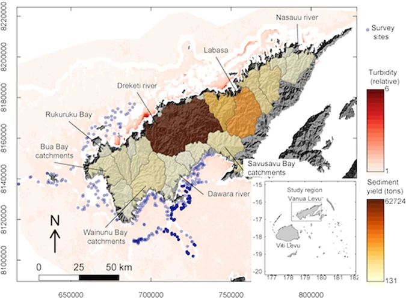
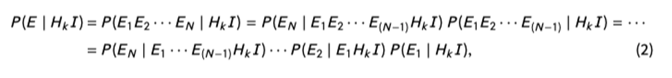
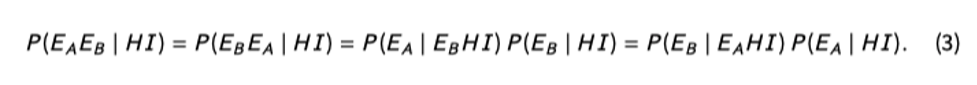
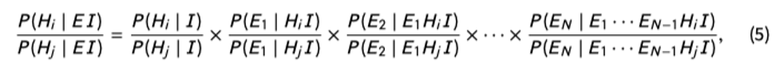
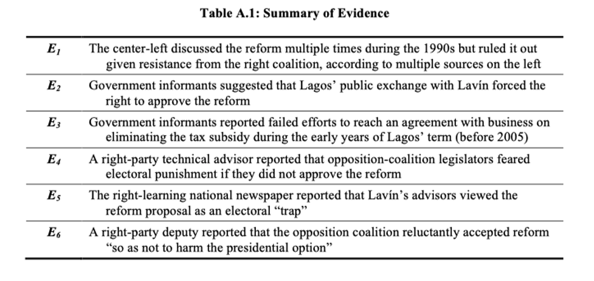
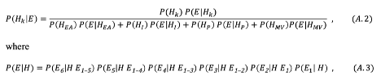
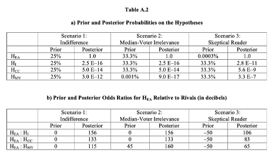
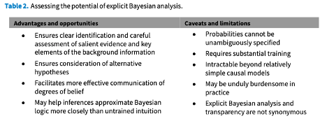

收录于合集
以下文章来源于Politicall理论志 ，作者Anders
 Politicall理论志 .
Politicall理论志 .
搜索“理论志”，发现新学术：七万余社会学人、政治学人、国政学人、政经学人共同关注的学术平台。目前，我们主力追踪国内外社会学、政治学、国际政治与政经济研究新动态。

作品简介
作者： Tasha Fairfield，伦敦政经学院国际发展系；Andrew E. Charman，加州大学伯克利分校物理系。
译者： Anders（Politicall理论志）
文献来源： Fairfield, Tasha, and Andrew E. Charman. 2017. “Explicit Bayesian Analysis for Process Tracing: Guidelines, Opportunities, and Caveats.” Political Analysis 25(3): 363–80. doi: 10.1017/pan.2017.14.
内容摘要
贝叶斯概率有可能成为定性和定量方法之间的重要桥梁。然而，尽管贝叶斯统计技术已经成功地在定量研究中得到阐述，但将贝叶斯概率应用于定性研究仍然是一个开放的领域。本文通过借鉴物理科学中对贝叶斯“作为扩展逻辑的概率(probability as extended logic)”的阐述，推进了贝叶斯过程追踪方面的新兴文献，其中概率代表了在我们拥有的不可避免的有限信息下对命题的合理相信程度。文章为明确的贝叶斯过程追踪提供了分步指南，呼吁注意那些被忽视或没有得到充分解决的技术要点，并且作者通过首次系统地应用于一个吸取了多个详细证据的案例研究，来说明如何应用这种方法。虽然文章警告说，在定性社会科学中明确应用贝叶斯学习的努力将不可避免地遇到概率无法明确规定的困难，但文章还是认为明确的贝叶斯分析的重要作用，即当学者们对推论产生分歧时，准确地指出争论的焦点，以及训练直觉以更系统地遵循贝叶斯的概率。
正文

在政治学中，越来越多的研究将贝叶斯主义确定为过程追踪的方法论基础，这需要通过根据发现的证据评估其他解释来对单一案例进行因果推断。与频率主义相比，贝叶斯概率可以处理不是由随机过程产生的数据（例如，来自专家和档案信息），它可以应用于解释独特的事件，而不需要参考一个群体，并且它要求一个迭代的 “与数据的对话”，这反映了过程追踪通常是如何进行的。
01
逻辑的贝叶斯主义（Bayesianism）
文章提倡 “逻辑的 “贝叶斯主义，正如在物理学中所阐述的那样，其被看为更广泛的过程追踪和科学推理的方法论基础。而常见的心理贝叶斯主义将概率视为知情的意见，而逻辑贝叶斯主义则试图代表我们在拥有信息的情况下应该对命题持有的理性程度的信念，不受奇想、希望或个人偏好的影响。一个概率P(A|B)代表了在假定除了B之外没有任何东西是已知的情况下，我们对命题A所持的理性的相信程度。
02
贝叶斯分析的可操作化
明确的贝叶斯过程追踪包括三个关键步骤：（1）在相关背景信息I下，指定假设H_i并分配先验概率P(H_i |I)；（2）确定证据E；（3）评估似然性P(E|H_i|I)和/或似然比P(E|H_i|I)/P(E|H_j|I)。接着可以通过贝叶斯法则的相对比值比（relative odd-radio），根据证据E获得H_i和H_j的后验比（posterior odds，见式子1）；（4）使用对数尺度分配概率的数值；（5）从多个证据中得出一个综合判断。
（1）假设和先验
**
**
在社会科学的研究中，在检验假设H时会与其逻辑否定值~H 进行比较，而本文主张设立一个或者多个~H。这种方法在社会科学中很关键，因为~H通常不会是一个定义明确的命题，H可能在本质上有无限种方式不成立。假设越具体，~H中体现的可能性就越多。如果我们没有首先考虑到~H实际上可能带来的具体可能性，那么直接评估P(E|H I)形式的似然性实际上是不可能的。文章认为只有有可能发生且互斥的假设是最好的。在实践中，要尽可能谨慎地指定假设，并明确地将其作为背景信息的一部分包括在假设中。如果有新的证据表明，一个更复杂的假设会提供最好的解释，我们应该把它纳入一个假设集合{H_k}中并重新进行分析。一旦确定了~H，我们就必须要分配先验概率。原则上，文章主张从最大无知的初始状态I_0开始，对每一个假设赋予同等的先验概率。然后，通过贝叶斯法则从I_0到实际的先验知识状态I建立起来。
（2）证据
**
**
文章将证据定义为任何对我们的假设的真实性有影响的相关观察或信息（超出我们的背景知识）。证据通常包含关于时间和顺序、行动者的目标和意图以及因果机制的其他方面的信息，这些信息来自广泛的来源，包括访谈、档案、媒体记录和二手文献。这些证据都难以在频率主义视角下实现，因为频率主义只分析可复制的观察结果或从一些随机过程产生的数据，如随机抽样。证据的类型 –无论如何区分– 对于贝叶斯分析的基本逻辑来说并不重要，因为我们可以评估任何命题的概率。文章认为证据的分类是多余的，除非它有助于我们评估似然性，因为证据只通过似然性进入贝叶斯计算，无论其来源或形式如何。
在贝叶斯框架下，试图为什么是 “好 “证据提供一个定义在很大程度上是多余的。证据的信息量可多可少，由似然比决定，但证明价值–或 “证据的重量”– 则是一个连续体。此外，重要的是整个证据体系对竞争对手的假设有多大区别。文章认为，要检验假设，需要权衡证据的质量，而不是数量。高质量的证据显然比多条低质量证据更有说服力。
**
** （3）似然和似然比
**
**
评估似然和似然比是贝叶斯过程追踪的关键推理步骤。证据的似然性告诉我们应该如何更新我们对某一假设的先验程度，更重要的是，似然比允许我们在相反的假设之间进行裁决，从而根据证据确定最佳解释。本节解释了如何最好地解释和评估似然性，以及处理来自可能不可靠来源的信息和说明多个证据之间的逻辑依赖性的准则。
居住在每个假设的世界中。 似然性P(E|H_i I )是我们对E的真实性的相信程度，这个命题陈述了一些具体的经验证据，以给定的假设和我们的背景信息为条件。评估P(E|H_i I )的关键是假设H_i是正确的，需要思考证据与相关假设的世界有多大的一致性，并想象在这个世界上我们可能会有哪些其他类型的观察或情景。
证词性证据：评估 “消息来源S陈述了X “的似然性。 社会科学家会使用当事人提供的证词性证据（“来源S陈述了X “），但这些证据往往不可靠，也难以像自然科学一样校准，学者需要评估证据来源的可靠性，即评估这个证据在特定假设下的似然性。评估信息将包括对消息来源的知识性和在特定假设下揭示或歪曲真相的动机的评估，以及一系列突出的背景线索（例如，身体语言和语调）。
关于以前纳入的证据的条件。 当证据E由多个观测值组成时，我们可以将似然性分解为式子2的乘积。式子2右侧是每个观察值E_X的似然性的乘积，但有一个细微的差别，即以前分析的证据必须与I一起作为条件信息纳入。

以先前纳入的证据为条件，需要仔细思考每个假设下E_X和E_prev之间的逻辑依赖。然而，在定性研究中对逻辑依赖性的推理可能是极具挑战性的，因为证据可以以任意复杂的方式联系起来。在实践中，我们应该力求做到最好，同时认识到处理数据中多种细微的依赖关系可能并不可行。
按照方便的方式对证据进行排序。 条件概率的规则意味着证据的顺序不影响最终的后验概率。使用概率的乘积法则和换元法，两个证据的联合可能性可以用以下任何一种等价方式来写（式子3）。因为我们可以自由地以任何顺序考虑证据，所以我们可以寻找有助于在评估可能性时对先前纳入的证据进行调节的序列。将具有强烈鉴别力的证据放在最后，可以避免将其他证据置于一个假设和一个在该假设下极其不靠谱的观察的结合点上
这是一种困难的心理活动，需要想象出非常令人惊讶的侥幸或巧合。最后纳入高度决定性的证据也可以避免对以前的证据进行仔细的调节，因为不管怎样，可能性比率都会非常大。另一方面，如果证据足够具有决定性，我们可以先纳入它，然后就可以了，因为额外的证据对我们的后验数只有很小的贡献。

（4）概率的对数尺度
**
**
文章主张使用对数尺度来表示比（odds）和似然比，再结合声音的类比，可以更好地利用直觉，在处理定性信息时增强一致性。这一建议是基于心理物理学，它表明感官知觉往往是刺激强度的对数函数。例如，声音是以dB为单位的，这样，声波的强度增加10倍，就相当于增加了10dB。出于类似的原因，对数标度被引入以评估概率推理中的不确定性认知。Good用分贝来衡量支持一种假设的证据权重，它与可能性比的对数成正比（式子4）。
证据的权重描述了证据的价值。用分贝来衡量对数，可以让我们利用日常的声音经验，同时为Gull的贝叶斯推理提供一个定量的基础，即 “与数据的对话”– 本质上我们可以问证据是在低声说话还是在大喊支持一个特定的假设。
在定性研究中，文章建议将强烈支持一种假设而不是竞争对手的决定性证据视为大约30分贝，即安静的卧室和对话之间的差异–换句话说，数据是 “清晰地说话”。同样，相对于一个更合理的对手，一个非常低的先验对数可以合理地设定为-50分贝，即针落和正常对话之间的区别。
（5）通过贝叶斯法则推断
**
**
最后一步需要应用贝叶斯法则来进行推理。当处理多个证据时，我们可以连续应用贝叶斯规则（式子（1）），或者我们可以在一个步骤中乘以似然比来进行推理，这是由式子（1）和（2）得出的。

取方程（5）的对数可以得到一个特别简单的、加法形式的贝叶斯规则–后验对数等于先验对数加证据权重。
这种表述提供了计算上的优势，即证据的权重也是相加的，我们必须记得酌情以E_prev为条件。
03
案例分析
文章随后用智利2005年税收改革作为应用例子。研究问题是为什么智利的中左政府除了提出增加边际累进税外，没有提出任何其他政策。假设H_EA为不平等问题在选举中十分重要，选民对公平的诉求促使右翼联盟接受税制改革，以避免选举成本。相反的假设~H_EA是，就算没有对公平的诉求，右翼联盟也会接受税制改革。
按照文章的技术步骤，首先需要阐述一套完整的互斥假设。为此，作者将～H_EA分解为3个替代假说：机制假说（H_I）= 智利制度化的政党体系和稳定的游戏规则激励了国会中的跨党派合作和协商一致的政治；中值选民假说（H_MV）=根据中值选民定理，选举竞争促使政治家们趋向于促进中位选民的物质利益的政策，与其他因素无关；以及核心选民假说（H_CC）：右翼联盟的核心选民（企业和高收入者）由于符合补贴条件的资产减少，维护税收补贴的物质利益更弱。
第二，对于4个假设，作者考虑了3种先验分布：一是每个假设被设置了25%的概率，这样避免了偏见，但忽略了很多背景信息；二是考虑诸多文献对于中值选民定理的批评，H_MV的先验概率被设置为0.001%，其他假设为33.3%，H_MV相对于其他假设的先验对数比为45dB，即假如使用声音类比，我们可以说H_MV在睡觉，需要45dB的声音来唤醒；三是假定一个高度怀疑者拥有相当多的背景信息，让他十分怀疑原始假设，并将其先验概率定为0.0003%，而其他假设为33.3%，这种先验分布使原始假设H受到50dB的惩罚，即针尖落地与正常对话的差别。
第三，作者罗列了6条关键证据（见下图）进行评估：

第四，证据权重分析与似然性。贝叶斯分析关键任务是为每个假设分配似然性P(E_X |H_j E_prev I)，即以我们先前纳入分析的证据E_prev和背景信息I为条件。在这一部分，作者在附件中讨论了大量的细节，由于篇幅的原因，这里只讨论证据一和证据二的结果：在讨论证据一时，WOE1(H_EA:H_I )=30dB，即在假设H_I为真的世界里，证据一明显有利于H_EA。WOE1(H_EA:H_CC )=3dB，在H_CC的世界里，成功的改革发生在不同的年份。这些多种可能性降低了观察到的具体时间线的可能性。证据一说明了比较具体的替代假说的重要性，而不是试图直接针对原始假说的全部逻辑否定来评估它。如果我们试图直接评估WOE1(H_EA:～H_EA)，我们将难以在精神上居住在像~H_EA的模糊的世界中，也难以进一步评估证据权重了。在讨论证据二时，WOE2(H_EA:H_I,E_1)=WOE2(H_EA:H_CC,E_1)=10dB。证据二通过提及反对派候选人与总统之间的交流，最终导致了诉求的上升，提供了H_EA下背后的因果机制的一瞥。由于证据二使政府在实现社会理想的目标方面显得精明而有效，同时突出了反对派对再分配的抵制，我们认为如果H_EA是真的，政府没有理由隐瞒这一信息。因此，可能性P(E_2|H_EA E_1 )应该很高。在另一个世界里，无论哪一个对立的假设是真的，政府的信息提供者可能还是有动机把反对派对2005年改革的支持归因于公平的呼吁，因为这个故事把政府描绘成正面的，把反对派描绘成负面的。然而，我们的背景信息使我们对这些信息提供者的知识水平、分析判断和真诚度有信心。平衡这些考虑，我们判断E_2有利于H_EA，比每个对手都要好10分贝。证据二说明，信息源提供的信息的准确性取决于假设。在H_EA下，信息提供者的陈述必须被视为真实的，而在对手下，这些陈述必然是假的 –信息提供者要么搞错了，要么在撒谎。下图总结了文章对每件证据E_1 -E_6的似然分配，该图显示了相对于每个备选假设，支持EA假设的证据权重。证据的权重越大，那件证据的证明价值就越大，可以更好地评估我们证据的证明价值。这就是贝叶斯证据提供反对有关替代假设的一个说明。
第五，根据贝叶斯法则（以下公式）计算假设的后验概率。

结果如下图，说明了在考虑了每一个证据之后，假设的概率是如何变化的，分别对应于假设的不同先验的三种情况。在每种情况下，H_EA的后验概率都达到了接近确定的程度，而最接近的竞争假说的概率最多下降到10^(-7)。从情景3中对原始解释最不利的先验 –0.0003%，对应于一个高度怀疑的读者– 开始，文章对H_EA的信心在仅纳入前四个证据后增加到97%。对数图说明了随后的证据是如何对替代性解释产生越来越多的怀疑，使它们的后验概率降低了更多的数量级。

04
结论
最后文章总结了贝叶斯方法对定性研究的贡献及不足(见下图)。本文的开创性研究引起了诸多讨论，读者们如果有兴趣，可以浏览作者们在2021年最新一期political analysis的回应。

审核 | 刘一衫 李致宪
（木海、林陌生等在此文编译中亦有贡献）
排版 | 何婕
文章观点不代表本平台观点，本平台评译分享的文章均出于专业学习之用, 不以任何盈利为目的，内容主要呈现对原文的介绍，原文内容请通过各高校购买的数据库自行下载。